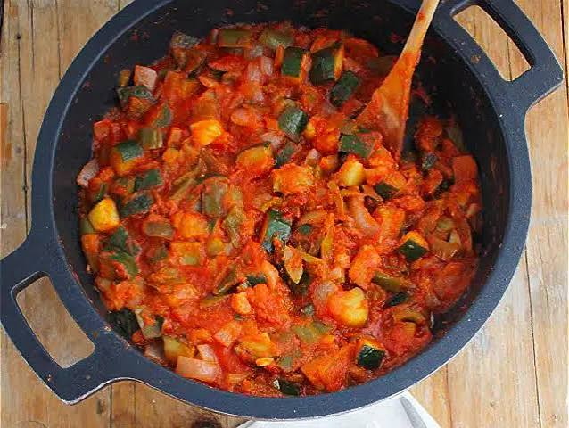

Ingredientes (4-6 personas)
| Producto | Cantidad |
|---|---|
| Calabacín | 2 |
| Pimiento rojo | 1 |
| Pimiento verde | 1 |
| Cebolla | 1 |
| Tomate triturado | 300gr |
| Aceite de oliva | Al gusto |
| Sal | Al gusto |

Elaboración
- Corta todas las verduras en dados pequeños.
- Sofríe la cebolla y los pimientos en aceite a fuego medio.
- Añade el calabacín y cocina 10 minutos.
- Agrega el tomate y la sal.
- Cocina a fuego suave unos 25 minutos hasta que espese.
- Sirve caliente o templado.